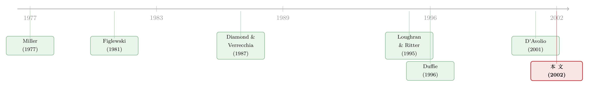

「特殊」的不只是国债：一份借券账本，替做空策略算了笔真账
本文读的是 Geczy, Musto & Reed (2002, Journal of Financial Economics)：作者拿到一家顶级借券机构整整一年的股票借贷账本（1998 年 11 月—1999 年 10 月，273,225 笔贷款），第一次用「真实的借券成本和可借性」去重放那些教科书里的做空策略。结论是——对于因子组合、DotCom、IPO 这些策略，专门性成本 (specialness) 小得几乎可以忽略，约束不了利润；但到了并购套利 (merger arbitrage)，真正卡住你脖子的不是「贵」，而是「根本借不到」。
1 一个被所有人默认、却几乎无人验证的假设
金融学里有一类论文，读起来总让人心痒。它们告诉你：A 资产相对 B 资产高估了，于是你只要做空 A、做多 B，就能稳稳赚到一笔。新股长期跑输、成长股不如价值股、输家不如赢家、并购方在公告后下跌……每一个异象 (anomaly) 背后，都藏着一个「卖出高估那一头」的动作。
但这里有一个被反复念叨、却几乎从没被认真验证的小字注脚：做空，要先借到券。你卖出一只你并不持有的股票，到了 t+3 交割日，必须把股票交到买方手里；而拿到这些股票的标准做法，就是从某个出借人那里借。于是做空的成本、可行性、可靠性，全都压在了这笔「股票借贷」上。
问题是，几乎所有研究这些异象的论文，都默默地假设这笔借贷「免费、随借随有、永不被召回」。这个假设到底有多离谱？没人真的知道。因为这个市场是场外的、不透明的，外人看不到价格，也看不到谁借到了、谁没借到。
这正是本文的切口：与其在理论上争论卖空约束 (short-sale constraint) 有多严重，不如直接拿一份真实的借券账本来对账——把那些「纸面上的利润」，放进真实的借券成本里再算一遍。
2 「专门性」：把国债市场的语言搬到股票上
要理解这篇论文，得先理解一个词：专门性 (specialness)。
它本来是回购 (Repo) 市场的概念。在回购市场里有一个一般抵押 (General Collateral, GC) 利率，适用于那些「不稀缺」的债券；而当某只债券特别抢手、人人都想借它来交割时，借出它的人就能要求一个更低的利率——这中间的差额，就是这只债券的专门性。一句话：别人越想借你手里的券，你就越能从借券里赚到钱。
作者敏锐地发现，股票借贷市场是同一套语言。回购里的利率，在股票借贷里对应的是回扣利率 (rebate rate)：借券人交来现金抵押（美股标准是股票价值的 102%），出借人把这笔现金的一部分利息「回扣」给借券人。回扣越低，说明这只股票越抢手——它就越「special」。
那么 GC 利率本身怎么定？这里有一个干净利落的处理。作者发现，数据提供方把贷款按金额分成 Large、Medium、Small 三档，分别定价。于是对每一天、每一档，当天绝大多数贷款的回扣利率会扎堆在同一个数上——这个众数 (mode)，就是当天该档的 GC 利率。证据很有说服力：98% 的 Large 贷款、76% 的 Medium 贷款恰好落在各自的众数上；而且这两个 GC 利率非常贴近市场隔夜利率——Large GC 平均比联邦基金有效利率低 8 bp，Medium GC 低 15 bp。
有了 GC，专门性就可以一笔一笔地算出来。对某只股票 i 在某天 t 的一笔贷款 j（属于尺寸档 s、回扣率为 r），它的贷款级专门性，就是这一档的 GC 利率减去这笔贷款的回扣率：
$$\text{specialness}_{j} = \text{GC}_{s,t} - r_{j}$$
同一只股票当天往往有好几笔贷款，作者把它们按金额加权平均，得到股票级的专门性 S_{i,t}，并定下一条阈值：
$$S_{i,t} > 25\text{ bp} \;\Longrightarrow\; \text{stock } i \text{ is on special on day } t$$
专门性是借券人要额外付的成本，也是持券人出借能多赚的收入。它按计息方式结算。举个论文里的例子：一个投资者借入 $1MM 的股票，专门性 250 bp，借 7 个日历日，那么这笔专门性成本（含 102% 抵押）是
$$(\$1.02\text{MM}) \times 0.025 \times \frac{7}{360} = \$496$$
数字不大——这恰恰是后面整篇论文反复出现的主题：专门性成本在大多数时候，小得令人意外。
3 识别策略：把同一个策略，在「三种人」手里各跑一遍
这篇论文没有理论模型，它的全部巧思，在于一个朴素却有力的实验设计：把同一个做空策略，在三个借券「门槛」下各重放一次，再比较它们的收益。
这三个门槛是：
- 无约束 (Unconstrained)——文献的标准假设：任何股票都能零成本做空。这对应教科书里那个理想化的投资者。
- GC + Specials——好门槛：既能借 GC 股票，也能借 specials，但借 specials 要付专门性成本。这对应一个大型机构（大对冲基金）能拿到的批发价。
- GC Only——差门槛：只能借到 GC 股票，凡是 special 的、或者数据提供方根本没出借（或只有 Small 贷款）的，一律视为「借不到」。这近似一个散户的处境。
这里有几个值得称道的保守处理。第一，因为做空要 t+3 交割，借券时间序列要比样本期滞后两个交易日。第二，作者只承认「这一家出借人」的库存：哪怕另一家大型小盘股出借机构 DFA 当天出借了某只股票，只要本文的数据提供方没借，GC Only 和 GC+Specials 投资者就一律借不到——这无疑低估了真实可借性。第三，他们还把召回风险 (recall risk) 算进来：一旦数据提供方不再有该股的 Medium 或 Large 贷款，就强行平掉这个空头。
换句话说，这套设计是故意往「难」的方向偏的。如果在这么苛刻的约束下，一个策略的利润依然挺得住，那它在现实里只会更稳。于是全文的核心实证问题变得无比清晰：
在「好门槛」和「差门槛」下能赚到的收益，比起「无约束」的标准假设，到底缩水了多少？缩水的部分，会不会吃掉这个策略本来记录在案的全部利润？
（关于「借不到券」如何在股票与期权之间撑开价差，可参见《同一份现金流，两个价格：当「借不到的券」撑开了期权与股票的裂缝》。）
4 数据
让我先把这份账本的家底交代清楚，因为它正是全文的底气所在。
数据来自一家托管银行 (custodian bank)，它替自己的托管客户（共同基金、养老金等）做出借代理；借券方基本都是券商/交易商。所以作者观测到的价格，最好理解为批发、下限价格——是最大、处境最好的投资者才能拿到的成本。
- 样本期：1998 年 11 月 1 日—1999 年 10 月 31 日，共
249个交易日。 - 观测单位：每一笔贷款、每一天，记录股数与当前回扣率。
- 规模：
273,225笔独立贷款，中位久期3个交易日；7,144只不同股票至少出现过一次；平均每天有3,170只股票的贷款在外。
数据库不区分续作贷款 (continuing) 和定期贷款 (term)，但作者被告知后者极少，于是假设全部为续作——这让他们可以把「某笔贷款某天的回扣」解读为「假如这笔贷款当天才发起，会谈成的回扣」。
5 第一回合：因子组合、DotCom——约束几乎不咬人
故事从最经典的战场打起：业绩评价文献里的那几个多空因子组合。做空大盘股、做多小盘股；做空成长、做多价值；做空低动量、做多高动量。D'Avolio (2001) 此前发现，成长股和低动量股相对更容易变 special——这就埋下一个怀疑：会不会这些策略的做空那一头，恰恰要付高昂的专门性成本？
作者先做了一张专门性的单变量排序表（表 2），把规模、账面市值比、动量三个维度各分三档，报告每一档的平均专门性，以及——这一点至关重要——有多大比例的股票能观测到专门性。
结果耐人寻味。沿着规模从小到大，专门性从 38 bp 降到 15 bp 再降到 4 bp/年，似乎说明做空大盘股成本极低。但这个 38 bp 的小盘股数字，只代表了被分配股票里 13% 的那一小撮——剩下 87% 根本没有可观测的专门性，谁也不知道它们在不在外面借得到。账面市值比和动量那两行也是同样的故事：成长股、低动量股的专门性看上去只有 21 bp 和 27 bp/年，但分别只覆盖了 51% 和 28% 的股票。
于是真正关键的一步出现了：专门性整体上是罕见的，所以哪怕做空那一头偶尔撞上几只 special，相对于策略记录在案的利润仍是九牛一毛；而数量众多的 GC 股票，足以把策略跟得很紧。把无约束、GC+Specials、GC Only 三个版本都跑出来对比，作者发现——受约束组合与无约束组合之间的期望收益差，太小了，吃不掉无约束策略已经记录的利润。这个结论在统计上也站得住：除了「价值减成长」在差门槛下只在 10% 水平上显著，其余都在 5% 或更好的水平上显著。
接着轮到 DotCom。这正是泡沫最盛的年份，一个流行的解释是：互联网股票之所以贵得离谱，是因为它们难以、或昂贵到无法做空。但账本不支持这个故事——无论好门槛还是差门槛的投资者，都能拿到对这些股票的空头敞口。作者确实发现，那些贵得难借的 DotCom 普遍对指数更敏感，但它们的批发成本，相对于 DotCom 本身那种动辄翻倍的波动，实在微不足道。
到这里，故事似乎在朝一个略显平淡的方向走：卖空约束被高估了，异象大体都能交易。但论文真正的张力，藏在后面两块。
6 第二回合：IPO——能不能借到，取决于「你是谁」和「过了多久」
新股 (IPO) 给借券市场出了一道更精细的题。最基础的问题是：新股一上市，到底能不能做空？
答案第一次出现了清晰的分层。有好门槛的投资者，一开始就能做空大多数IPO；而没有 specials 渠道的投资者，一只都借不到。大约一个月之后，至少有四分之一的 IPO 才向「无 specials 渠道」的投资者开放。这是一个很有冲击力的事实：在新股最容易被高估、最该被做空的头几周，散户型投资者被彻底关在门外。
那么这道门槛贵不贵？作者算出，做空 IPO 的批发借券成本——也就是持有 IPO 的人出借能赚到的收入——在发行时约为 3%/年，并在 25 个交易日内迅速降到 1.5%/年。这听上去不低，但请记住它要对账的是什么：Loughran and Ritter (1995) 记录的新股长期约 5%/年的跑输。借券成本远远够不到这条线。
更漂亮的一步是，作者另外构造了一个「最不成熟股票」指数——上市 6 到 12 个月、正是 Loughran and Ritter (1995) 发现跑输的那批。对一个能借到 specials 的投资者，做空这个指数的专门性成本只有 0.44%/年。于是作者可以拒绝「这些利润一点都拿不到」的原假设；哪怕对完全没有 specials 渠道的投资者，这个假设也能被拒绝（只是显著性更低）。
（新股上市后为何持续跑输，是否只是测量与内生事件的产物，另有一段公案，可参见《为什么「上市后跌跌不休」可能是一道算术题？》。）
IPO 还有一个更尖锐的子问题：锁定期到期 (lockup expiration) 前后的跑输。内部人锁定期一过，大量股票解禁，价格往往承压。作者发现，这个跌势在 IPO 全样本里强而显著；更关键的是，在「好门槛」和「差门槛」都借得到的子样本里，它依然显著，而且这些交易的借券成本微不足道。换句话说，这是一个连散户都能在现实中捕捉到的模式。
（锁定期为什么存在、内部人为何主动给自己上锁，可参见《上市这天终于能套现，他却亲手把自己锁住 180 天》。）
7 反转：并购套利——真正卡你的，不是「贵」，是「没有」
如果到第六节为止，你已经准备得出「卖空约束被严重高估」的结论，那么并购套利这一节，就是论文给你的反转。
标准的并购套利交易是：买入目标公司、做空收购方（见 Baker and Savasoglu, 2002）。这一回，账本给出的图景完全不同——数据提供方出借收购方股票的发生率，普遍很低。也就是说，很多时候你想做空收购方，根本借不到券。
于是结论是双重的。一方面，专门性确实随收购方市值下降而上升：收购方越小，借它越贵。但另一方面——这是全文最重要的洞见之一——对盈利能力真正起决定作用的，不是「贵」，而是「有没有」。当投资者只能在数据提供方愿意出借时才做空，样本期内的并购套利利润被大幅削减（虽然仍然很大）。专门性那点成本，相比「借不到 special 股票」这件事本身的杀伤力，小得几乎可以忽略。
这就把整篇论文的主旨拧成了一句话：卖空摩擦的杀伤力，主要不在价格维度（你要付多少），而在可得性维度（你能不能借到）。 对因子组合和 DotCom，GC 股票足够多、可得性够好，所以摩擦不咬人；对并购套利，可得性骤然恶化，摩擦就显出了牙齿。把「成本」和「可得性」分开来看，是这篇论文留给后人最值钱的一课。
（关于这家被本文匿名处理的出借机构的横截面专门性来自何处，可参见《做空之前，你得先借到那张股票》。）
8 文献脉络
把这篇论文放回它的坐标系，会看得更清楚。
最上游是理论的怀疑。Miller (1977) 提出，当悲观者被挡在做空门外，股价会被乐观者单方面抬高，产生上偏。Figlewski (1981) 给出早期实证：高卖空兴趣与未来超额收益负相关。Diamond and Verrecchia (1987) 则用一个理性预期模型修正了 Miller——如果市场参与者知道做空受限，价格未必有偏，但信息效率会下降。这条线一路把「卖空约束会扭曲价格」从直觉做成了理论。
（Miller 式的「分歧 + 做空约束 → 价格上偏」这条逻辑，在后续被反复检验，可参见《市场为什么只会「崩」，不会「暴涨」？——一个关于沉默者的故事》。）

中游是借券市场本身的登场。Duffie (1996) 把回购市场的专门性讲透，给了本文最直接的语言来源。到了世纪之交，D'Avolio (2001) 和 Duffie, Garleanu, and Pedersen (2001) 几乎同时从理论上刻画股票借贷市场，Reed (2001) 用借券数据验证了 Diamond–Verrecchia 关于信息效率的假说，Jones and Lamont (2001) 则把 specials 的低未来收益追溯到 1929 年大崩盘前后。
而本文 Geczy, Musto, and Reed (2002) 站在哪里？它自己点明：与它最接近的，是 Krishnamurthy (2001) 用「新债 / 旧债」国债套利、按真实借券成本去重放的做法。本文做的是股票版本的同一件事——但它把镜头同时对准了多个著名异象（因子、IPO、并购套利），并且第一次系统地把「成本」和「可得性」分开度量。这正是它在这条脉络里的独特位置：不是又一个解释「卖空数量」的研究，而是一个直面「卖空可不可行、贵不贵」的研究。
9 评论与延伸（Q&A + 研究方向）
(a) 几个可能的疑问
Q：专门性 (specialness) 和卖空兴趣 (short interest) 是一回事吗？
不是，而且这正是本文区别于大半文献的地方。卖空兴趣度量的是「做空的数量」（有多少股被空），而专门性度量的是「做空的价格」（借这只券要付多大代价）。大量早期文献（Figlewski、Asquith–Meulbroek 等）研究的是数量，本文研究的是价格与可得性——两者可以背离：一只股票可以卖空兴趣很高却毫不 special，反之亦然。
Q：只用「一家出借人」的账本，会不会严重低估真实可得性，从而夸大约束？
会低估可得性，但这恰恰让结论更稳。作者明确选择保守：别家（如 DFA）借得到、而本数据方没借的股票，一律当作借不到；召回也一律强制平仓。所以对因子、IPO 这些「约束不咬人」的结论，现实中只会更成立；唯一需要小心的是并购套利那块——「借不到」可能部分是这家机构的特性，而非整个市场都借不到。
Q：批发价、下限价，对散户意味着什么？
意味着本文算出的专门性成本，是「最便宜」的版本。GC+Specials 投资者对应的是大对冲基金能拿到的零加价批发成本；散户面对的是 GC Only，且还要再叠加券商加价。所以「连散户都能捕捉锁定期跌势」这类结论，是在偏向散户不利的假设下得到的，相当可信。
Q：样本期只有一年（1998–1999），而且正好赶上互联网泡沫，结论能外推吗？
这是最实在的担忧。这一年既有 DotCom 狂热，也有特定的利率环境，专门性的水平和分布未必代表常态。作者对 DotCom 的处理某种程度上把这个特殊性变成了优势（正好检验「难借抬高了泡沫」的假说），但因子组合和并购套利的量级，确实可能是样本期特有的。
Q：把「专门性成本」从因子组合收益里减掉，就等于这些异象「可交易」了吗？
不完全。本文只处理了专门性这一种摩擦，明说不考虑其他交易成本（佣金、冲击成本、做多那头的成本等）。所以严格讲，结论是「专门性这一项不足以吃掉利润」，而不是「这些异象扣除全部成本后仍然有利可图」。
Q：为什么并购套利里「可得性」比「成本」更要命，而因子组合里不是？
因为可得性取决于「有没有人在出借这只券」。因子组合做空的是大盘股、成长股，这些券广泛存在、GC 股票一抓一大把；而并购里被做空的收购方，常常没人出借，尤其当收购方是小公司时。摩擦的瓶颈从「价格」切换到了「数量」，正是本文最核心的发现。
(b) 几个可能的研究问题与提案
1. 把这套「三门槛重放」搬到公司债 / 信用市场
【经济故事】公司债的卖空与借贷比股票更不透明、更分散，结构模型隐含的「信用利差套利」「同发行人不同券价差」长期被怀疑无法实现，原因之一可能正是借不到券。把本文的「成本 vs 可得性」二分法搬过来，能直接回答这些信用套利到底是纸面利润还是真利润。 【可行性】中。需要公司债借贷 / 回购的成交级数据（如某些托管行或 DTCC 衍生数据），可得性是主要障碍；识别上可沿用本文「三门槛」设计，doable 但数据获取是硬约束。
2. 外资持有人是否系统性改变了某些券的「可得性」
【经济故事】出借意愿高度依赖持有人结构。指数基金、被动外资是出借大户，而某些受监管或有投票偏好的外资可能不愿出借。如果一只券的外资持股越高、可得性越好，那么外资进入本身就在悄悄放松卖空约束、提升价格效率——这是一条尚未被量化的渠道。 【可行性】中。需要把借券可得性数据与逐券的持有人结构（如 13F、跨境持仓）匹配，识别可借「指数纳入 / 可投资度变化」做准自然实验；机制清晰，关键看借贷数据能否拿到。
3. 危机时刻的「召回风险」如何给流动性溢价定价
【经济故事】本文把召回当作强制平仓处理，但召回本身是一个随时间变化的风险。在市场承压时，出借人集体收回券（去杠杆、回收抵押），会同时打击做空者和价格效率。把召回率做成一个时变变量，可以检验它是否在危机中被定价进了流动性溢价。 【可行性】中偏低。需要带「贷款终止」时间戳的面板（本文数据方就有，但作者坦言不知道是谁终止的），识别召回的「供给侧 vs 需求侧」是难点；理论上 doable，数据与归因是瓶颈。
4. 锁定期到期的可交易跌势，今天还在吗？
【经济故事】本文发现锁定期跌势连散户都能借到券去捕捉、且成本微乎其微。但二十多年过去，借券市场电子化、做空数据公开化，这个「免费午餐」是否已被套利吃掉？这是一个干净的「异象消亡」检验。 【可行性】高。锁定期日历是公开可得的，借券成本数据（如 Markit / IHS 的 DCBS）现成，事件研究 + 跨期对比即可，非常 doable。
10 我的判断
这篇论文的贡献，不在于发明了什么新方法，而在于把一个所有人都默认、却几乎无人去验证的假设，第一次摊开在真实数据面前。它最聪明的地方有二：一是用「贷款回扣的众数」干净地反推出 GC 利率，把一个不透明市场的影子价格变得可测；二是用「三门槛重放」把抽象的卖空约束翻译成可比较的收益差。而它最经得起时间检验的洞见，是把卖空摩擦拆成「成本」和「可得性」两个维度，并指出后者（尤其在并购套利里）才是真正的瓶颈。
对识别，我有两点保留。其一是单一出借人 + 单一年份：账本只来自一家托管行、只覆盖 1998–1999 这一段非典型时期，「借不到」究竟是市场普遍现象还是这家机构的库存特征，无法区分；并购套利那个最抢眼的结论，恰恰最依赖这个无法区分的判断。其二是摩擦的不完整性：全文只处理专门性一项，明说不碰其他交易成本，所以「不足以吃掉利润」的结论，离「扣除全部成本后仍可盈利」还有距离，读者不该把前者读成后者。
后续我最想看到的，是把这套框架推进到两个方向：一是时间上的纵深——用今天电子化、数据公开化之后的借券面板，重做一遍同样的策略，看哪些约束被套利磨平了、哪些还在；二是资产类别的横移——把「成本 vs 可得性」的二分法搬到公司债与信用衍生品，那里的不透明、分散与「借不到」，很可能比股票市场更严重，也更值得一算。
参考文献
- Baker, M., Savasoglu, S. (2002). Limited arbitrage in mergers and acquisitions. Journal of Financial Economics, forthcoming.
- D'Avolio, G. (2001). The market for borrowing stock. Unpublished working paper, Harvard University.
- Diamond, D. W., Verrecchia, R. E. (1987). Constraints on short-selling and asset price adjustment to private information. Journal of Financial Economics 18, 277–311.
- Duffie, D. (1996). Special repo rates. Journal of Finance 51, 493–526.
- Duffie, D., Garleanu, N., Pedersen, L. H. (2001). Securities lending, shorting and pricing. Unpublished working paper, Stanford University.
- Figlewski, S. (1981). The informational effects of restrictions on short sales: some empirical evidence. Journal of Financial and Quantitative Analysis 4, 463–476.
- Geczy, C. C., Musto, D. K., Reed, A. V. (2002). Stocks are special too: an analysis of the equity lending market. Journal of Financial Economics 66(2–3), 241–269.
- Jones, C. M., Lamont, O. A. (2001). Short sale constraints and stock returns. Journal of Financial Economics, forthcoming.
- Krishnamurthy, A. (2001). The bond/old-bond spread. Unpublished working paper, Northwestern University.
- Loughran, T., Ritter, J. R. (1995). The new issues puzzle. Journal of Finance 50, 23–51.
- Miller, E. M. (1977). Risk, uncertainty and divergence of opinion. Journal of Finance 32, 1151–1168.
- Reed, A. V. (2001). Costly short-selling and stock price reactions to earnings announcements. Unpublished working paper, University of Pennsylvania.